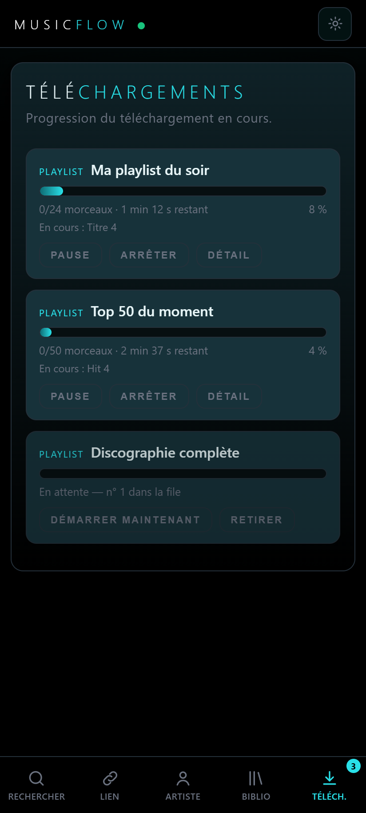
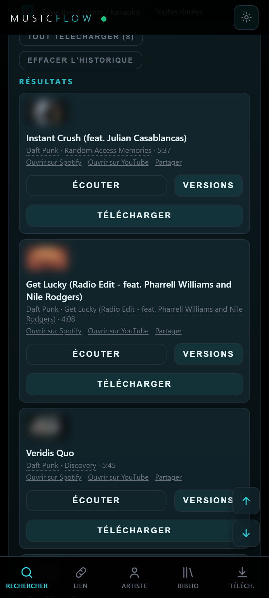
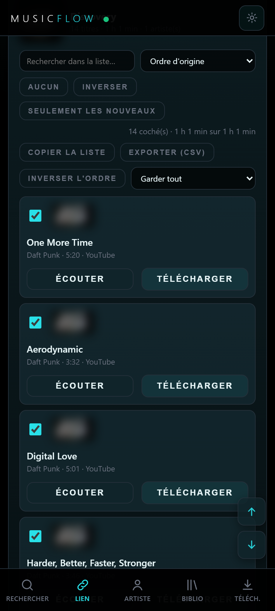
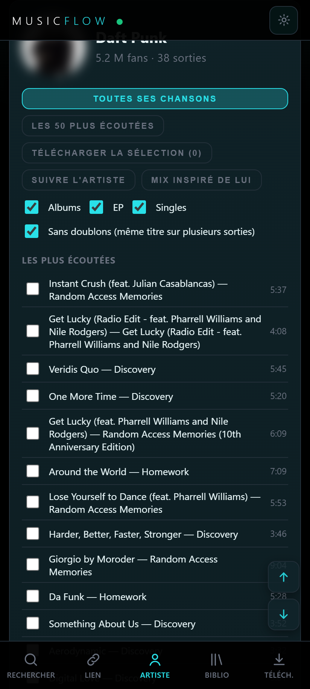
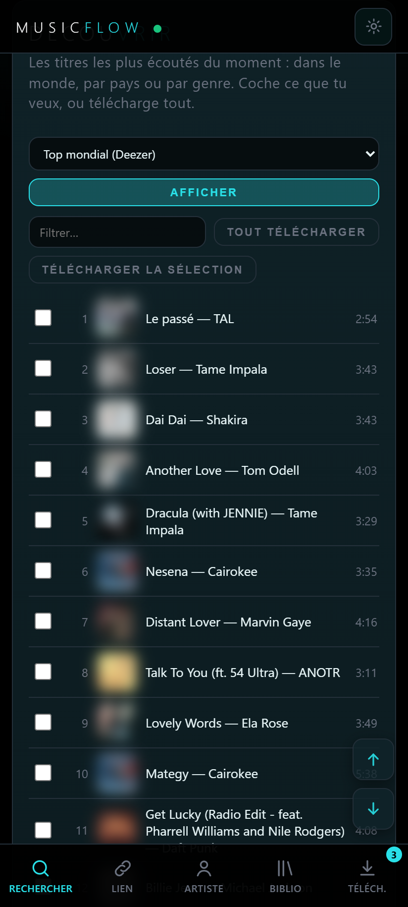
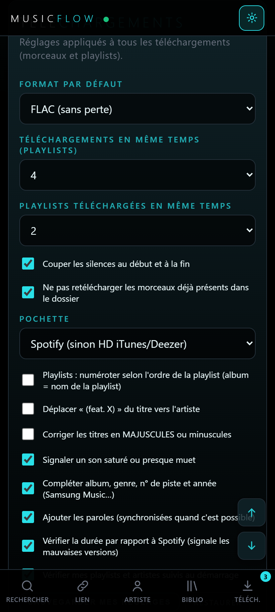
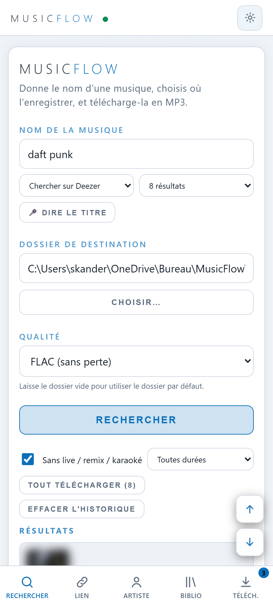

Cherche un titre, colle un lien de playlist ou choisis un artiste : MusicFlow télécharge tout avec le bon titre, l'album, la pochette et les paroles.
Gratuit · libre (GPL-3.0) · sans compte, sans publicité · Android 8+ et Windows

Par titre, par artiste (toute sa discographie), par lien de playlist ou d'album, ou plusieurs titres d'un coup.
Tops mondiaux, par pays et par genre, playlists populaires, artistes similaires.
Plusieurs playlists en parallèle, pause et reprise, et reprise automatique au retour d'internet.
Titre, artiste, album, genre, n° de piste, année, pochette HD et paroles synchronisées.
Durée comparée, lives et karaokés écartés, comparaison des versions, « autre version » en un clic.
Ce qui est déjà dans ton dossier n'est jamais retéléchargé.
MP3 jusqu'à 320 kbps, FLAC, WAV, Opus, AAC. Silences de début et de fin retirés.
Favoris, étiquettes, éditeur de tags, re-taguage automatique de tes anciens fichiers.
Suis une playlist ou un artiste : nouveaux titres et nouvelles sorties détectés.






MusicFlow-x.y.apk dans les versions publiées.pip install -r requirements.txtpython app.py, puis ouvre http://127.0.0.1:5090.